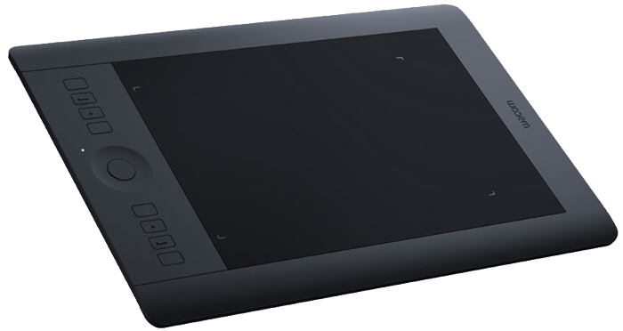

overview
why does this webpage exist?
20%
time
in my web development class, we were assigned to do a LAUNCH project. using the last 20% of our class time at the end of the week, we developed a project based on a topic of interest. i chose to revolve my project around the making of a digital art piece. to showcase my final piece and the steps i took to get there, we built a webpage on top of the Bootstrap framework. this allows us to utilize the tools we have learned throughout the year without having to start a website from scratch.
launch
what is the launch project?
in my web development class, we were assigned to do a LAUNCH project. using the last 20% of our class time at the end of the week, we developed a project based on a topic of interest. i chose to revolve my project around the making of a digital art piece. to showcase my final piece and the steps i took to get there, we built a webpage on top of the Bootstrap framework. this allows us to utilize the tools we have learned throughout the year without having to start a website from scratch.
look,
listen,
learn
ask
tons of
questions
understanding
the
process
navigate
your
ideas
create
a
prototype
highlight
and
fix
process
how did i get to my final product?
i knew not how i was to approach my project. i would need to a find a program to use. in my initial brainstorming, i thought of illustrator, inkscape, and gimp.
before i could fully dive into my project, i learned that one of my friends used sketchbook, a, easy-to-use free drawing program. i seized this opportunity and explored it when my sister needed a birthday party invitation.
sketchbook was relatively simple to use, especially for an amateur artist like myself. with my macbook and bamboo tablet, i could draw what i wanted. after scrolling through some of my photos, i found one of myself that wouldn't be too difficult.

to start, i sketched out the photo, gauging the details of the main subject in the photo, me. i decided to ignore the background due to time constraints.
using a series of layers, brushes, and colors, i created my final piece mostly experimentally. i had little to no knowledge about this program or techniques. admittedly, i scarcely referred to tutorials or articles, relying on the movement of my hands over the tablet to make my work. below, you will see the final piece, sized to be an iPhone 6 wallpaper.
work
what is the final product?
conclusion
what did i take away from this project?
LAUNCH
i learned a lot of important lessons in the making of this project. i will always look to my artistic side, even if i plan to study technology in the future. in essence, art and tech can go hand and hand, so long as i ask the right questions. i will always understand the importance of my passions that don’t necessarily relate to my future; in some indirect way, they will help me navigate my life ahead. With my passions as my tools, i can help create a world bigger and brighter than ever. this project was definitely a highlight of my semester.